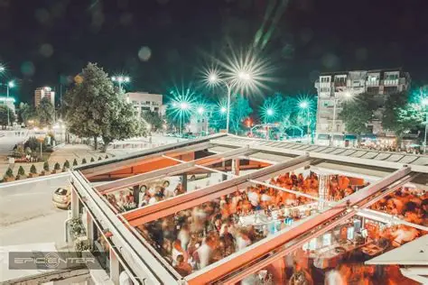
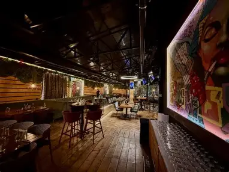
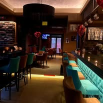
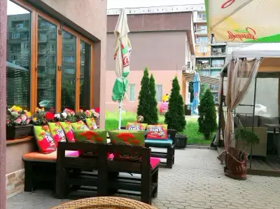
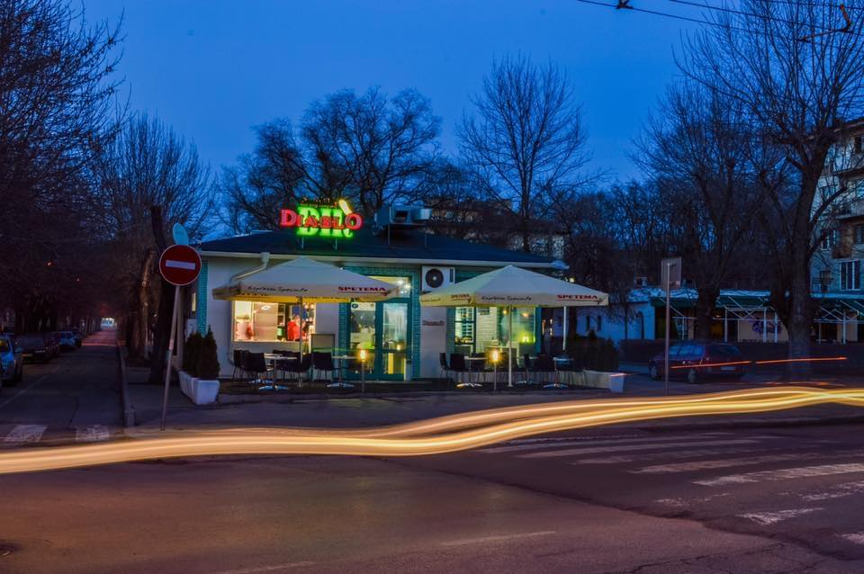
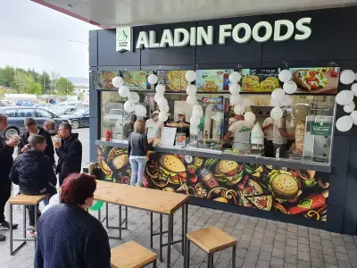
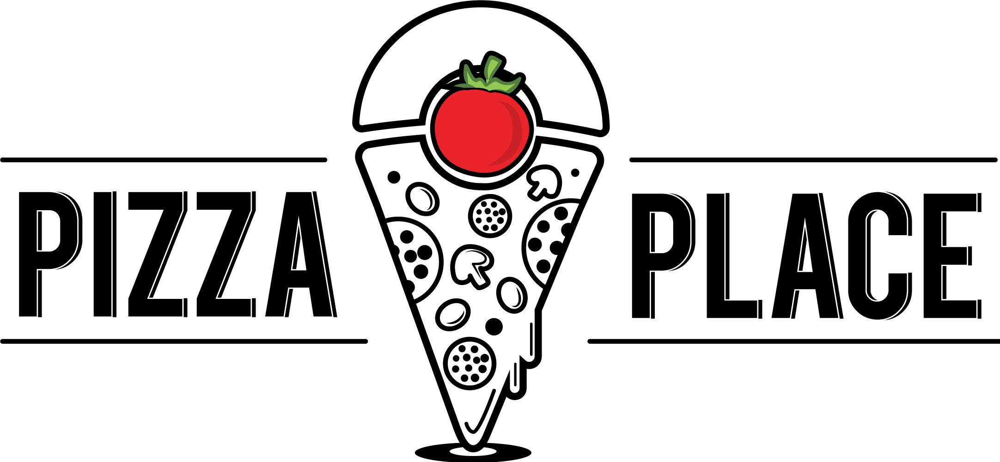
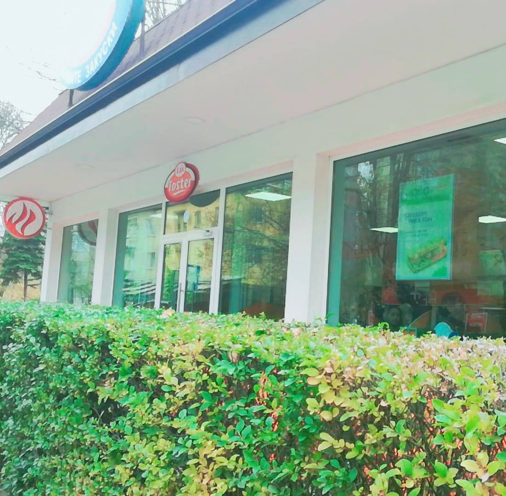

Места за хапване и раздумки
Къде можете да хапнете и да си отпочинете в Перник
🍽️ Ресторанти

Pera Park
Поглезете сетивата си с кулинарни шедьоври, поднесени в най-елегантната и стилна обстановка на града.

Deep Dish
Забравете за тънката пица - тук властва богатият вкус и сочната плънка в една модерна и градска среда.

Ел Дорадо
Класика, която не остарява. Мястото, където традиционната кухня среща гостоприемната и топла атмосфера.

Маракеш
Пренесете се в приказките от 1001 нощ с екзотични ястия и загадъчна обстановка.
☕ Кафенета

Epicenter
Пулсът на Перник е тук! Идеалното място за кафе в модерна и динамична обстановка.

Caramel
Вашето бягство в света на сладките изкушения. Обстановката е уютна и приятна.

La negro
За ценителите на премиум кафето и минималистичния дизайн. Една стилна концепция за вашия ден.

Tutti Fruti
Цветен коктейл от емоции и вкусове. Мястото е свежо, позитивно и зареждащо с много лятно настроение.
🍕 Бързо хранене



Pizza Place
Вашата любима дестинация за парче топла и вкусна пица. Непретенциозно и идеално за хапване в движение, на няколко места в града.

Las Toster
Култовите сандвичи в града! Хрупкава коричка и любими съставки.